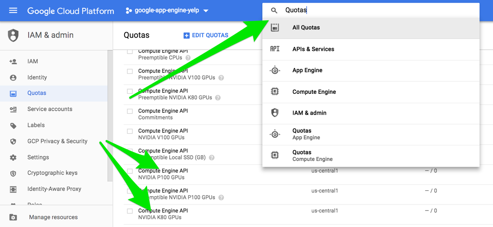
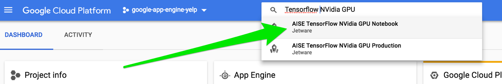
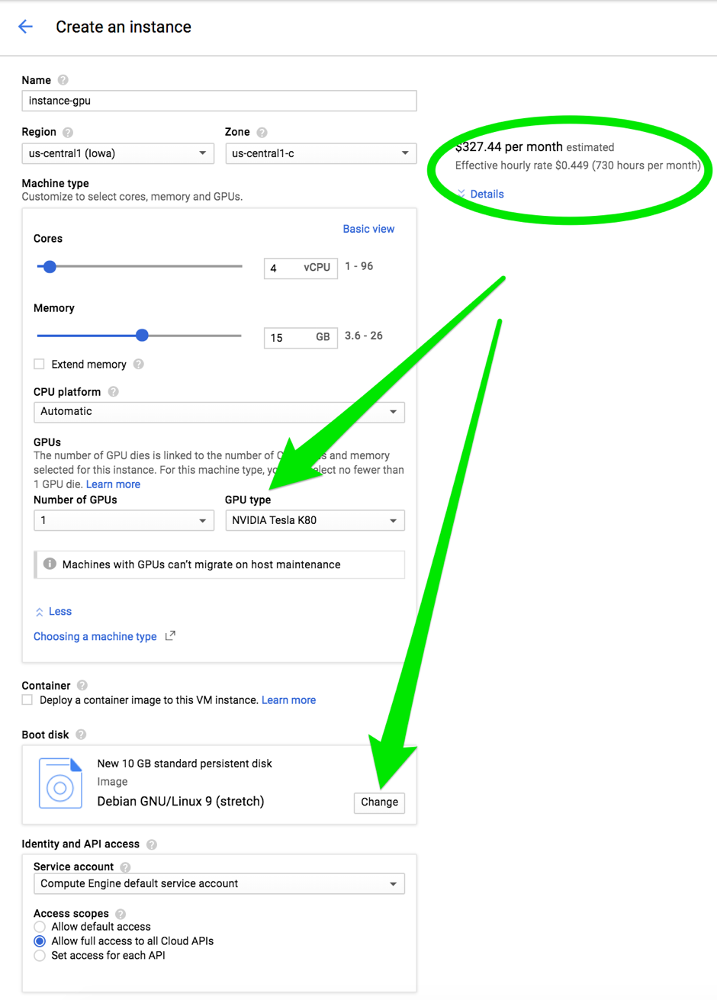
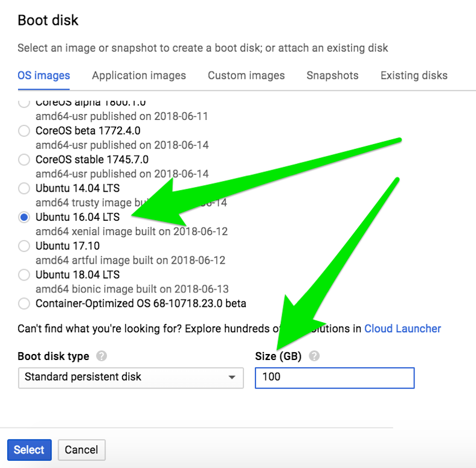
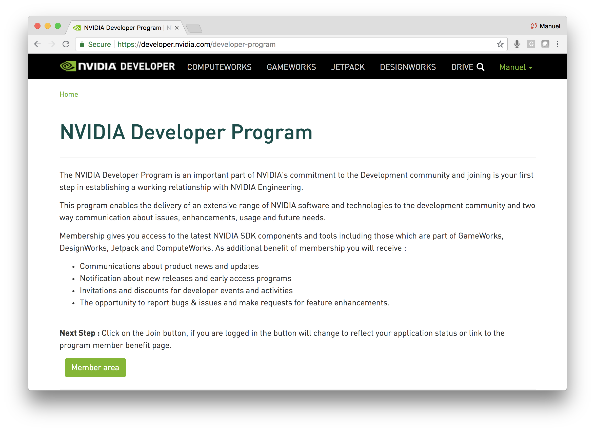
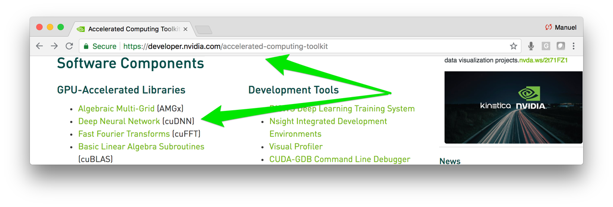
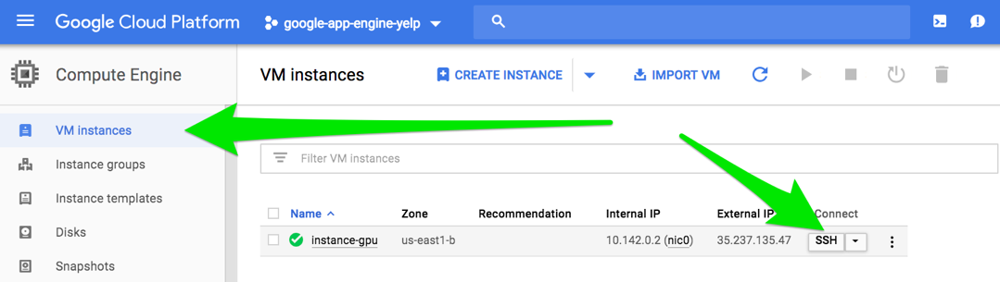

GPUs on Google Cloud - the Fast Way & the Slow Way
Practical walkthroughs on machine learning, data exploration and finding insight.
On YouTube:

Here are YouTube video notes on two methods to get GPUs up-and-running for Tensorflow on Google Cloud. A quick one using pre-built Jetware instances, and one from scratch using a VM.
Note: this isn't meant to be stand alone notes, use with corresponding video.
Method 1: Jetware Instances
Enable GPU quotas
For either approach you need a credit-card enabled GCP account even if you are using free credits. You also need to change GPU Quotas to allow for at least one GPU. In the search bar in your Google Cloud Platform. Enable the GPU you want for your region. Click "EDIT QUOTAS", fill the form and wait for Google's green light.

Type in GPU in the search bar and select the "Tensorflow NVidia GPU"

Deploy your Jetware instance, hit the Jupyter button and tensor away!

{% include follow-me.html %}
Method 2: From Scratch
Let's do the above from scratch (a big thanks to Eric Scuccimarra for his great blog).
Go ahead and click on "VM Instances" and "Create Instance". You still need to enable GPUs and have a credit-card enabled account (see above for steps).

Choose Ubuntu 16.04 and an appropriate boot disk size. The create your instance. Get the instance started and click on 'Create'

Get cuDNN - You need to become a member of the "NVIDIA Developer Program" in order to get cuDNN, the "Deep Neural Network (cuDNN)" binaries. Signup at https://developer.nvidia.com/developer-program and wait for your confirmation email.

Once you have access, click on Member area then select the Accelerated Computing Toolkit.
Finally, download the GPU-Accelerated Libraries Deep Neural Network (cuDNN) binaries.
I chose to download file libcudnn7_7.1.4.18-1%2Bcuda9.0_amd64.deb

You are ready, fire up your instance by clicking the "SSH" button. Once it is up, upload the (cuDNN) file onto your cloud instance using upload gear button.

You have everything you need to get you going - let's prepare the instance. Run the following commands to update apt-get, run as root, and install Nvidia's CUDA software:
# update apt-get
sudo apt-get update
# work as root
sudo su
#!/bin/bash
echo "Checking for CUDA and installing."
# Check for CUDA and try to install.
if ! dpkg-query -W cuda; then
curl -O https://developer.download.nvidia.com/compute/cuda/repos/ubuntu1604/x86_64/cuda-repo-ubuntu1604_9.0.176-1_amd64.deb
sudo dpkg -i cuda-repo-ubuntu1604_9.0.176-1_amd64.deb
sudo apt-get update
sudo apt-get install cuda-9-0
sudo nvidia-smi -pm 1
fi
Test that your GPU is sucessfully installed:
# check that GPU is working
nvidia-smi
Install your Deep Neural Network (cuDNN) binaries that you uploaded earlier (check your version):
sudo dpkg -i libcudnn7_7.1.4.18-1+cuda9.0_amd64.deb
Set sticky path defaults
echo 'export CUDA_HOME=/usr/local/cuda' >> ~/.bashrc
echo 'export PATH=$PATH:$CUDA_HOME/bin' >> ~/.bashrc
echo 'export LD_LIBRARY_PATH=/usr/local/cuda/extras/CUPTI/lib64:$LD_LIBRARY_PATH' >> ~/.bashrc
source ~/.bashrc
Install needed Python binaries
# Install tensorflow
sudo apt-get install python3-dev python3-pip libcupti-dev
# install tensorflow-gpu
sudo pip3 install tensorflow-gpu
# install ipython3
apt install ipython3
Test out the instance using GPU code (see code programmers_guide).
# https://www.tensorflow.org/programmers_guide/using_gpu
# Creates a graph.
with tf.device('/gpu:0'):
a = tf.constant([1.0, 2.0, 3.0, 4.0, 5.0, 6.0], shape=[2, 3], name='a')
b = tf.constant([1.0, 2.0, 3.0, 4.0, 5.0, 6.0], shape=[3, 2], name='b')
c = tf.matmul(a, b)
# Creates a session with log_device_placement set to True.
sess = tf.Session(config=tf.ConfigProto(log_device_placement=True))
# Runs the op.
print(sess.run(c))
Happy tensoring!
Manuel Amunategui - Follow me on Twitter: @amunategui